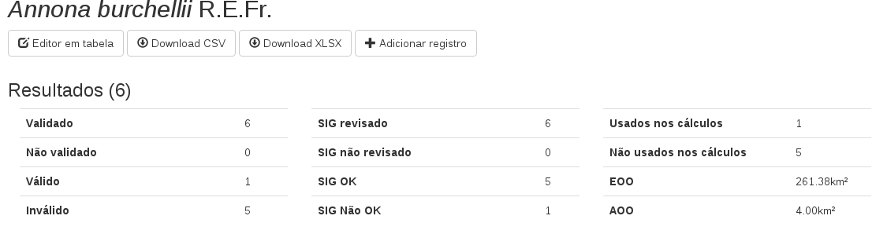

Biodiversity in Brazil


Access using Tapir or ask for data.
Access using Tapir.
Non existent.
Still in development.
Have an IPT since last year.
Have an IPT since this year.
Project started last year, got an IPT.
Still no clear way to access the data.
But can access the sources.
Created in 2008, started work in mid 2009, inside JBRJ.
It's main attributions:

At least this information is available about all data.

Every information is validated by a group of specialists, and the assessment is further reviewed by trained evaluators.
How we handle it:

It is composed of modular (mostly) independent, replaceable parts.
Single Sign On solution for all the apps.

Provide services based on Flora do Brasil taxonomy data.

Manage the groups of specie to work.
Upload, insertion, preview and general work on occurrence data.
Perform EOO and AOO, along with the status of the occurrences.

Show information about each record.
Allow to work on georeference to improve location quality.

And validation by the specialists on taxonomy, presence, position and others.

Consolidation, analysis and validation of general data.

Assessment, review and finalization of risk assessment.
Names and categories in IPT
Data is also on a webservice.

Also in the portal, consuming from the webservice.
And we are working on better reports on CKAN.
Also some auxillary tools:
As Martin Fowler puts it:
"(...) a particular way of designing software applications as suites of independently deployable services."


A schemaless restful document database and a great index and search system.

Ruby, Clojure and PHP.